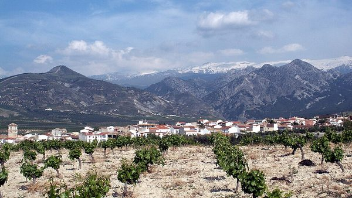

Servidor WEB-DILAR (192.168.100.13)

Dílar es un pueblo de la provincia de Granada, a unos 15 km de la capital, situado entre la Vega y Sierra Nevada. Tiene unos 2.000 habitantes y por su término pasa el río Dílar, muy conocido por las rutas de senderismo que suben hacia la sierra.
Foto: Cristiandilar, Wikimedia Commons, dominio público.
Página de prueba para la práctica de redes de Sistemas Informáticos (1º DAM).